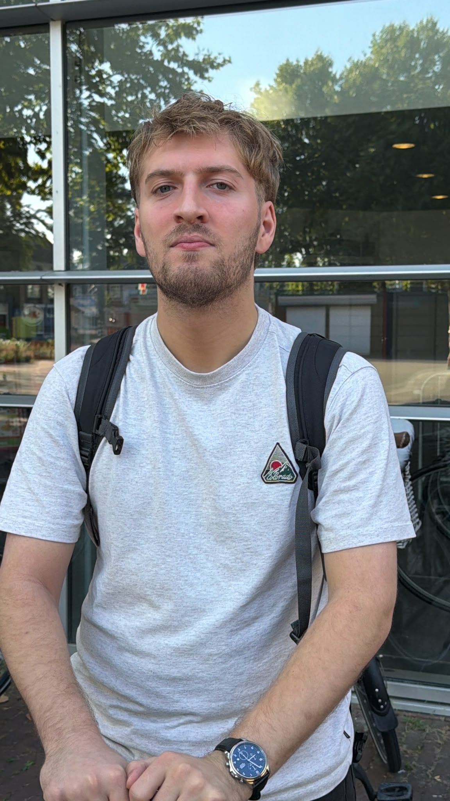
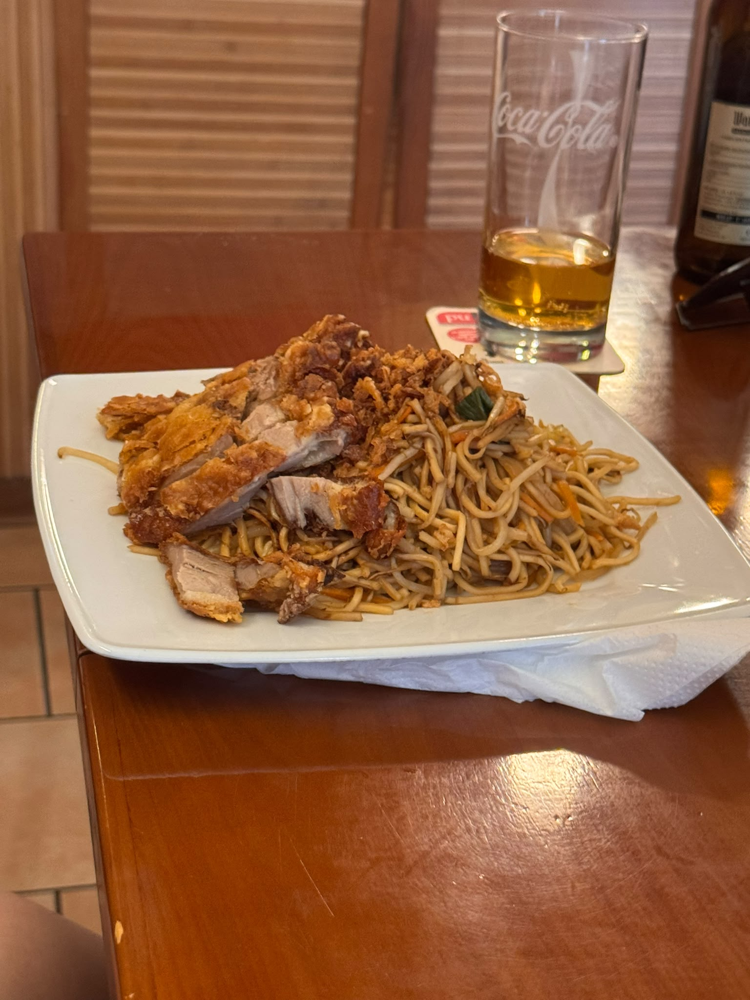
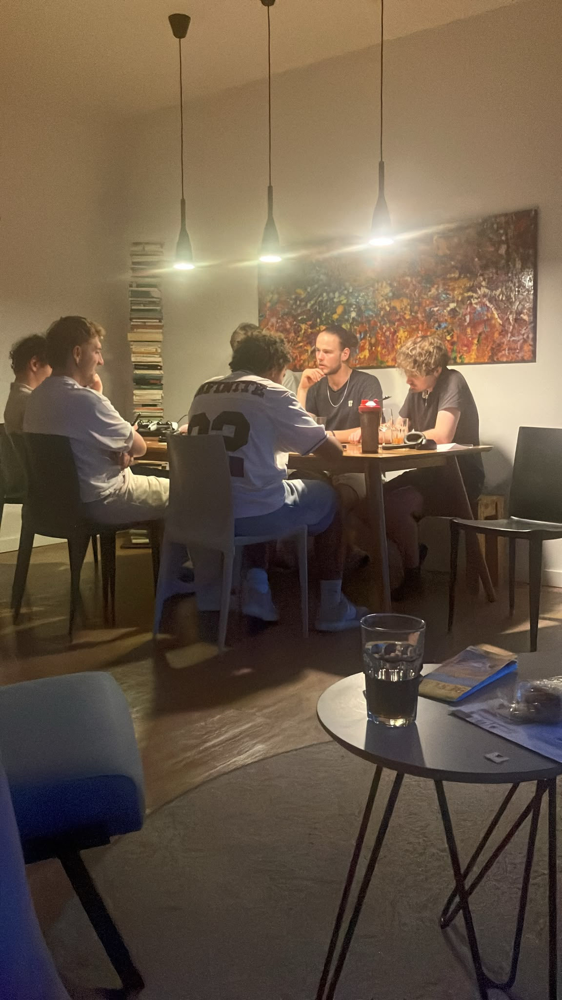

Ik vind Berlijn echt een leuke stad. Het is heel somber maar toch ook heel cool. Klik op de ander gekleurde teksen als je de linkjes wil zien :).
Aankomende vakantie ga ik naar Berlijn. Hier komen de updates
Vandaag (8 augustus 2026) ben ik me aan het voorbereiden op de reis. Na een hele paklijst gemaakt te hebben kwam ik erachter dat niet alles past in de koffer (-_-;). Ondertussen zijn we heen en weer aan het appen met de jongens en bespreken wie wat meeneemt en hoelaat we de trein nemen. We meeten om 7.45 op Nijmegen cs dus das vroeg. Ook hebben we gehoord dat we t huis uit geschopt worden als we te luid zijn in de rusturen. Ik ben benieuwd hoe het gaat zijn.
Hallo! Het is momenteel 17.19u en we zijn aangekomen in het huisje en hebben de kamers verdeeld. Vandaag hadden we de treinreis van 6 uur, met daar nog een uur vertraging bij (dus 7) zonder airco en met weinig beenruimte. Ik slaap met Aaron naast de voordeur. Naast ons slapen Faas en Daniel. Dan heb je tegenover ons hokje de gang en een badkamer. Daarnaast slapen Julian en Thomas en naast hun Timo en Jules. Dan eindigt de gang en heb je een tweede badkamer en tegenover de kamer van Jules en Timo de keuken. Op dit moment zijn de meeste jongens net gedoucht of aan het douchen en Faas is naast me eafc26 aan t spelen terwijl Aaron en Thomas achter me Duitse tv kijken.
Het is momenteel 20.24u. We hebben net gegeten bij een Aziatisch restaurant . Dit restaurant was super goedkoop en vullend. Timo had muy pittig eten gekozen en moest huilen. Vervolgens ging iedereen zelf proeven hoe pittig de pepers waren, waaronder ik (en toen kreeg ik de peper in mn oog (>w<)). Het is vandaag natuurlijk zondag in Duitsland dus we hebben geen open supermarkten. We zijn daarom net naar een kiosk geweest en hebben wat soda en drank gehaald. Daniel en ik chillen en de rest speelt een kaartspel.
Het is nu 23.17u. Ik heb net een korte presentatie aan de jongens gegeven. We gaan namelijk morgen met 6/8 mensen verstoppertje spelen door berlijn. Mocht je willen weten hoe dit werkt, zou ik deze video aanraden. Na veel voorbereid te hebben voor morgen duik ik vandaag vroeg het bed in, want morgen beginnen we vroeg met het spel. Slaaplekker en tot morgen!! :3
Hallo! het is 00.40 (eigenlijk dag 3 lol). Vandaag heb ik hide and seek met Aaron, Faas, Jules, Timo en Julian gespeeld. Ik ben een beetje salty omdat Aaron en ik hebben verloren en als enige groepje niet vals hebben gespeeld, maar daar valt niks meer aan te veranderen. Ook heb ik vandaag mijn thesis cijfer terug en ik ben erg blij met wat ik heb. Daarna heeft Thomas cocktails voor ons gemaakt, hebben we wat gechilled en zijn we naar bed gegaan. Morgen uitslapen en dan om 12u naar de Bundestag. Slaaplekker!!
Hallo! het is dag 4 13.46u. Gister zijn we naar de bundestag en stad geweest. Aaron en ik hebben de hele stad doorgezocht naar eclipsbriollen maar alles was helaas uitverkocht. Ik heb in de avond avg gekookt en we zijn uit geweest naar een club in RAW Gelände. Vandaag ga ik naar de stad om te winkelen. Ik gooi vanavond weer een update.



Ik vind Berlijn echt een leuke stad. Het is heel somber maar toch ook heel cool. Klik op de ander gekleurde teksen als je de linkjes wil zien :).